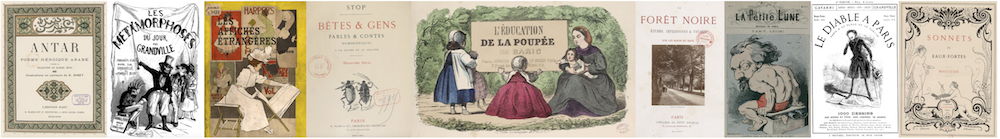

Bibliographie

Nous mentionnons les principales publications de Luce Abélès. Ses articles feront l’objet d’un recueil en cours d’édition sous la direction d’Hélène Védrine, qui en a établi la bibliographie. On pourra consulter le beau portrait que lui consacrent Chantal Georgel et Hélène Védrine dans les Nouvelles de l’estampe, n° 255, été 2016, p. 86-87.
Ouvrages
- Abélès Luce (dir.), Le Gamin de Paris, Catalogue d’exposition, Paris, Palais de Tokyo, Musée d’art et d’essai, Paris, Réunion des Musées Nationaux (Cahiers du musée d’art et d’essai, Palais de Tokyo. 18)
- Abélès Luce (dir.), Paul Valéry et les arts, Arles, Actes Sud, 1995, 155 p. [Contient « Paul Valéry et la photographie », p. 63-82]
- Abélès Luce (dir.), Toulouse-Lautrec : la baraque de la Goulue, Catalogue d’exposition, Paris, Palais de Tokyo, Musée d’art et d’essai, Paris, Réunion des Musées Nationaux (Cahiers du musée d’art et d’essai, Palais de Tokyo. 14), 15 p.
- Abélès Luce et Charpin Catherine (dir.), Arts incohérents, académie du dérisoire, Paris, Réunion des musées nationaux, 1992, 94 p.
- Abélès Luce et Cogeval Guy, La Vie de Bohème, Paris, Éd. de la Réunion des musées nationaux, 1986, 80 p.
- Abélès Luce et Lacambre Geneviève, Champfleury : l’art pour le peuple, Paris, Réunion des musées nationaux, 1990, 68 p.
- Abélès Luce et Peyré Yves, Mallarmé (1842-1898) : un destin d’écriture, Paris, Gallimard / Réunion des musées nationaux, 1998, 205 p.
- Abélès Luce, Fantin-Latour, « Coin de table » : Verlaine, Rimbaud et les Vilains bonshommes, Paris, Ministère de la culture et de la communication, Éd. de la Réunion des musées nationaux, 1987, 68 p.
- Champfleury et Sand George, Du réalisme : correspondance, édition établie et présentée par Luce Abélès, Paris, Éd. des Cendres, 1991, 104 p. [Contient « Présentation », p. 9-19]
- Guibert Noëlle, Abélès Luce et Baron Philippe, André Antoine, fondateur du Théâtre-Libre, Paris, Société d’Histoire du Théâtre, 2002, 148 p.
- Le Men Ségolène, Abélès Luce et Preiss Nathalie, Les Français peints par eux-mêmes : panorama social du XIXe siècle, Paris, Réunion des musées nationaux, 1993, 109 p.
Articles
- « “Je suis pour – aucune illustration ‘: Mallarmé et le livre illustré », Mallarmé 1842-1898. Un destin d’écriture, Yves Peyré (dir.), Paris, Gallimard / Réunion des musées nationaux, p. 109-115.
- « 1848, 1865 : Champfleury et Daumier », Ridiculosa, n° 9, Numéro spécial sur Jules Champfleury, p. 21-39.
- « 1893 : les littératures européennes au crible des revues françaises », 1893 : L’Europe des peintres, Catalogue d’exposition, Paris, Musée d’Orsay, 22 février – 23 mai 1993, Françoise Cachin (dir.), Paris, Musée d’Orsay / Réunion des musées nationaux, p. 45-53.
- « Ailleurs ! revue satirique et poème coloré », catalogue d’exposition, Autour du Chat Noir : arts et plaisirs à Montmartre, 1880-1910, Philipp Dennis Cate (dir), Paris, Skira Flammarion, Musée de Montmartre, Paris, musée de Montmartre, septembre-novembre, p. 70-81.
- « Du Cousin Pons à L’aiguille creuse. Les musées privés romanesques au XIXe siècle », Revue d’histoire littéraire de la France. Numéro spécial Littérature et musées, p. 27-35
- « Fantastique et fantaisie. Le livre d’enfants au tournant du siècle », 1900, Catalogue d’exposition, Paris, Galeries nationales du Grand Palais, 14 mars - 26 juin 2000, Philippe Thiébaut (dir.), Paris, Réunion des Musées Nationaux, p. 246-253.
- « Fernand Desnoyers, “le dernier bohème” », Le Champ littéraire 1860-1900. Études offertes à Michael Pakenham, Keith Cameron et James Kearns (dir.), Amsterdam, Atlanta, Rodopi (Faux titre), p. 141-147.
- « L’Almanach du Bibliophile d’Édouard Pelletan (1898-1903) », Images, revues, expositions (1890-1914), actualité de la recherche, journée d’étude organisée par Ségolène Le Men, Grégoire Tonnet, Nicholas-Henri Zmelty et Jean-Michel Nectoux, INHA, 20 mars 2007 (non publié)
- « L’Escarmouche de Georges Darien, novembre 1893 - janvier 1894 », La Revue des revues, n ° 31, p. 4-19.
- « L’Extravagance joyeuse : le Clou, le Lézard, les Arts incohérents », Le Rêve d’une ville : Nantes et le surréalisme. Catalogue d’exposition, Musée des Beaux-arts de Nantes, 17 décembre 1994 - 2 avril 1995, Henri-Claude Cousseau (dir.), Paris, Réunion des musées nationaux, Nantes, Musée des Beaux-arts, p. 57-68.
- « La chromotypographie en France dans le livre et la presse », L’illustration en débat. Techniques et valeurs (1861-1931), Anne-Christine Royère et Julien Schuh (dir.), Reims, Épure (Coll. Héritages critiques), p. 365-394.
- « La Dame aux éventails, figure de fantaisie », La Dame aux éventails, Nina de Callias, modèle de Manet, catalogue d’exposition, Paris, Musée d’Orsay, 17 avril- juillet 2000, p. 83-94.
- « La froide fantaisie du monologue », Humoresques, 10, p. 67-80.
- « La Kelmscott Press de William Morris et son influence », 1900, Catalogue d’exposition, Paris, Galeries nationales du Grand Palais, 14 mars - 26 juin 2000, Philippe Thiébaut (dir.), Paris, Réunion des Musées Nationaux, p. 74-81.
- « La Renaissance littéraire et artistique : une critique engagée », La Critique d’art en France 1850-1900, Actes du colloque de Clermont-Ferrand, 25, 26 et 27 mai 1987, Jean Paul Bouillon (dir.), Saint-Étienne, CIERCEC, p. 135-146.
- « Le renouveau du bois gravé dans le livre illustré », 1900, Catalogue d’exposition, Paris, Galeries nationales du Grand Palais, 14 mars - 26 juin 2000, Philippe Thiébaut (dir.), Paris, Réunion des Musées Nationaux, p. 192-197.
- « Les recueils illustrés de chansonniers », Les périodiques illustrés (1890-1940). Écrivains, artistes et photographes, Philippe Kaenel éd., s.l., Infolio, 2011, (Archigraphy Poche, 2011), p. 51-87.
- « Les revues de l’image et du livre (1890-1897) et l’illustration en question », L’Europe des revues (1880-1920) : estampes, photographies, illustrations, Evanghélia Stead et Hélène Védrine (dir.), p. 159-179.
- « Les succès en images : la revue théâtrale Les Premières illustrées (1881-1888) », Revue d’histoire du théâtre, 2002, 1-2, p. 17-34.
- « Les traductions illustrées d’Edgar Poe en France (1855-1914) », Word & Image. A journal of verbal/visual enquiry. 30 : 3, p. 238-248.
- « Louis Legrand illustrateur : du Courrier français aux sociétés de bibliophiles », Le Livre illustré européen au tournant des XIXe et XXe siècles : Passages, rémanences, innovations. Actes du colloque international de Mulhouse, 13-14 juin 2003, Hélène Védrine (dir.), Paris, Éditions Kimé, p. 197-209.
- « Paul Verlaine de la bohème au bohème », Catalogue d’exposition, Bohèmes. De Léonard de Vinci à Picasso, Paris, Galeries nationales du Grand Palais, 26 septembre 2012 - 14 janvier 2013, Sylvain Amic (dir.), Paris, Réunion des Musées Nationaux.
- « Portrait et paysage : Mallarmé, Whistler, Monet », Turner, Whistler, Monet. Catalogue d’exposition, Paris, Galeries nationales du Grand Palais 11 octobre 2004 – 17 janvier 2005, Katharine Lochnan (dir.), Paris, Réunion des musées nationaux, Londres, Tate publishing, p. 163-177.
- « Roman, musée », La Jeunesse des musées. Les Musées en France au XIXème siècle, Catalogue d’exposition, Paris, Musée d’Orsay, 7 février – 8 mai 1994, Chantal Georgel (dir.), Paris, Musée d’Orsay/ Réunion des musées nationaux, p. 316-331.
- « Tolav Segroeg, Hongrois de Montmartre », Colloque Toulouse-Lautrec, Albi, musée Toulouse-Lautrec, mai 1992, Danièle Devynck (dir.) (Actes du colloque publiés en 1994 par le musée d’Albi).
- « Tradition et modernité : Les Rassemblements, un livre de transition » L’Illustration : Essais d’iconographie, Actes du séminaire CNRS (GDR 712), Maria Teresa Caracciolo et Ségolène Le Men (éds.), Paris, 1993-1994, Paris, Klincksieck, p. 311-325.
- « Un projet d’illustration inabouti : lettres de Champfleury à Hector Giacomelli », Histoires littéraires, n° 12, p. 41-56.